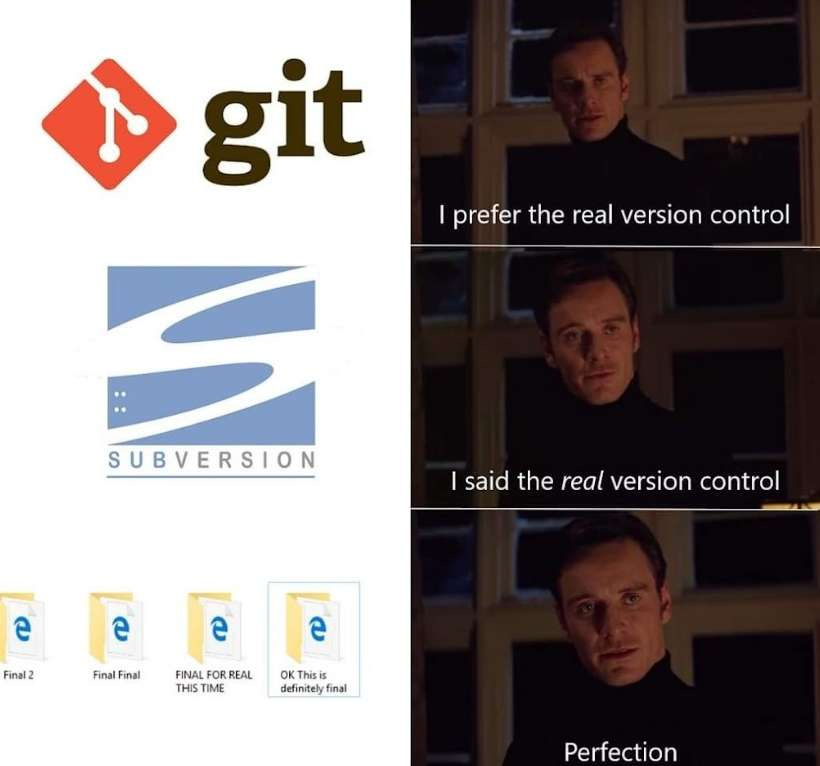

Press s for speaker notes

https://git-scm.com/docs/gitglossary
git clone https://github.com/jeetelongname/git-workshop
git add <change that needs to be added>
git restore --staged file
git commit git commit -m "some commit message here"
git branch <new branch name>
git checkout <branch name> git checkout -b <branch name>